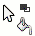
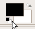
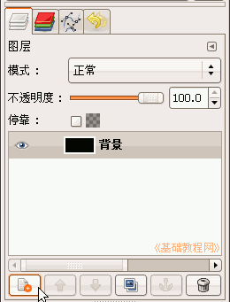
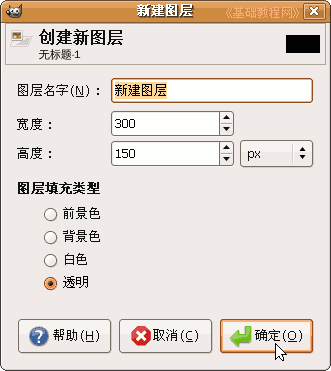
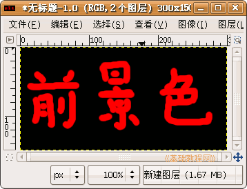

GIMP操作基础教程
作者：Teliute 来源：基础教程网
五、前景色和背景色 返回目录
绘制一个图像，其中需要确定背景层，这上面的颜色就是背景色，上面的其他颜色是前景色，下面我们来看一个练习；
1、启动GIMP
1）点上面板栏的菜单“应用程序－图像－GIMP图片编辑器”，就可以启动GIMP程序；
2）程序启动完成后，出来两个长条面板，如果还有一个“日积月累”面板，可以去掉下面的勾，点“关闭”；

2、背景色
1）点菜单“文件－新建..”命令，在出来的新建面板中，把宽度改为300，高度改为150像素(px)，点“确定”出来一个空白画布；

2）在工具箱面板中，选择油漆桶工具，把鼠标移到画布中，鼠标后面跟了一个油漆桶小尾巴；
3）检查一下工具箱里的颜色，应该是黑白色，如果不是就点一下“默认颜色”按钮上面的黑色是前景色，下面的白色是背景色；

4）把鼠标移到画布中，点一下鼠标左键，画布就喷上了黑色，当作是一块黑板；

5）调出“对话框”长条面板，在图层面板左下角，点击第一个“创建新图层”按钮 ，在出来的对话框中点“确定”，新建一个图层；
，在出来的对话框中点“确定”，新建一个图层；
 
3、前景色
1）在工具箱中选择画笔工具 ，在下面的选项中，点一下画笔那儿的小圆点，选择一个小一点的画笔；
，在下面的选项中，点一下画笔那儿的小圆点，选择一个小一点的画笔；
2）点一下工具箱里的黑色颜色块，在出来的面板中选择“色板”标签，再选择红色，点“确定”出来红色前景色 ，
，
在画布的黑板上写上三个字“前景色”，写的时候慢些，如果错了，就按Ctrl＋Z组合键撤销；

3）看一下图层面板中，也有了两层，上面是红色的画笔文字，下面是黑色的背景层；

以“前景色”为文件名，保存文件到自己的文件夹；
本节学习了GIMP中的前景色和背景色的 基本知识，如果你成功地完成了练习，请继续学习下一课内容；本教程由86团学校TeliuTe制作|著作权所有，商业用途请与作者联系
基础教程网：http://www.laxjyj.com/teliute/
美丽的校园……
转载和引用本站内容，请保留版权信息和本站链接。